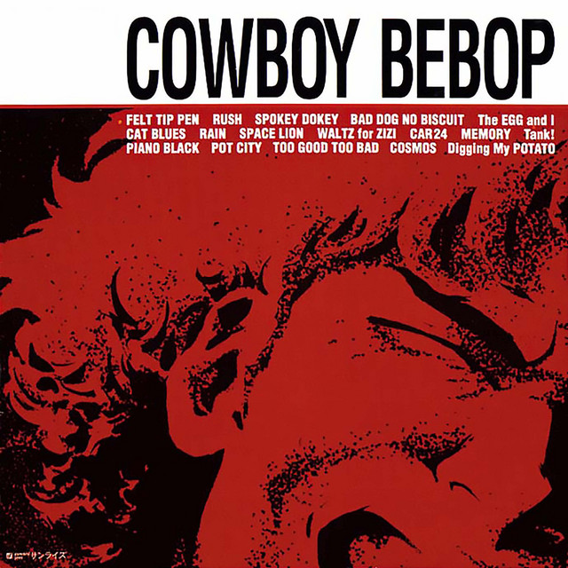
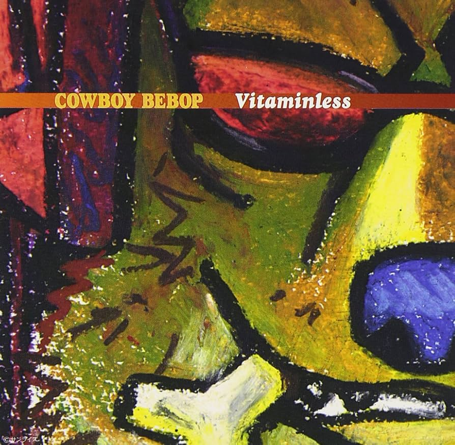
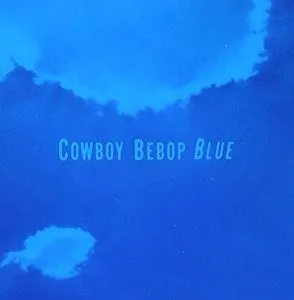

Cowboy Bebop
Tank!

The Seatbelts to kultowy, japoński zespół muzyczny prowadzony przez wybitną kompozytorkę i instrumentalistkę Yōko Kanno. Grupa została powołana do życia w 1998 roku specjalnie w celu nagrania legendarnej ścieżki dźwiękowej do kultowego anime Cowboy Bebop.
„Tank!” to kultowy, niezwykle dynamiczny utwór jazzowy z 1998 roku, który służy jako motyw otwierający anime Cowboy Bebop. Ta instrumentalna kompozycja, oparta na szybkim rytmie bongosów, wyrazistym kontrabasie i potężnej sekcji dętej z widowiskowym solem saksofonowym, rozpoczyna się słynnym wezwaniem „...let's jam” i do dziś pozostaje jedną z najbardziej rozpoznawalnych czołówek w historii animacji.
„Tank!” pojawia się na samym początku niemal każdego odcinka jako stały motyw muzyczny czołówki serialu, wprowadzając widzów w jego klimat. Utwór ten powraca również w trakcie trwania samej akcji, na przykład podczas dynamicznej i widowiskowej sceny walki w kasynie w trzecim odcinku zatytułowanym „Honky Tonk Women”.
The Real Folk Blues

Za kultowe brzmienie utworu odpowiada japońska wokalistka Mai Yamane, która w swojej twórczości czerpie inspiracje z gatunków takich jak jazz, blues oraz pop, a jej głęboki, przepełniony emocjami głos bywa porównywany do stylu Janis Joplin. Piosenkę nagrała we współpracy z zespołem The Seatbelts, a całą kompozycję stworzyła słynna kompozytorka Yoko Kanno, znana z genialnego łączenia różnych stylów muzycznych w świecie anime.
"The Real Folk Blues" to kultowy motyw końcowy (ending) anime Cowboy Bebop. Kompozycja łączy w sobie elementy bluesa i rocka, opowiadając o głębokiej tęsknocie, samotności oraz bolesnych wspomnieniach, z którymi mierzą się główni bohaterowie serialu. Utwór stał się tak ważnym symbolem całej produkcji, że jego tytułem nazwano również dramatyczny, dwuczęściowy finał całej serii, w którym losy bohaterów znajdują swoje ostateczne rozwiązanie.
"The Real Folk Blues" pojawia się na samym końcu niemal każdego odcinka jako oficjalny motyw zamykający (ending) serialu Cowboy Bebop. Wyjątkiem jest jedynie finałowy, 26. odcinek serii (zatytułowany zresztą "The Real Folk Blues (Part 2)"), w którym zamiast tej wersji w napisach końcowych usłyszymy jej alternatywną, równie poruszającą odsłonę pod tytułem "See You Space Cowboy..."
Call Me Call Me

Utwór zaśpiewał amerykański wokalista i gitarzysta rockowy Steve Conte, znany m.in. z występów w legendarnym zespole glam rockowym New York Dolls. Posiada on charakterystyczny, chropowaty, a zarazem niezwykle melodyjny głos, który idealnie pasował do zachodnich inspiracji muzycznych serialu. Muzykę skomponowała Yoko Kanno, a partię instrumentalną nagrał jej zespół The Seatbelts.
"Call Me Call Me" to jedna z najbardziej ikonicznych i poruszających piosenek z ścieżki dźwiękowej Cowboy Bebop, łącząca w sobie elementy alternatywnego rocka i ballady popowej. Ten przepełniony melancholią utwór ze zjawiskową partią wokalną opowiada o desperackim poszukiwaniu bliskości, poczuciu zagubienia oraz pragnieniu usłyszenia znaku życia od kogoś, z kim straciło się kontakt.
Piosenka "Call Me Call Me" pojawia się w anime tylko raz, na końcu 24. odcinka ("Hard Luck Woman"), towarzysząc rozpadowi załogi Bebopa. Utwór leci w tle, gdy Ed i Ein odchodzą, Faye odnajduje ruiny swojego dawnego domu, a Spike i Jet w milczeniu jedzą jajka na twardo, pogodzeni z faktem, że ich wspólne życie właśnie przeszło do historii.